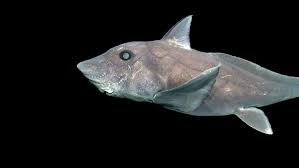

tiburones

tiburón fantasma
El tiburón fantasma, también denominado 'quimera azul de nariz puntiaguda', es un tiburón que existe desde hace aproximadamente 300 millones de años, pero jamás había podido ser filmado por la profundidad en la que habita: al menos dos kilómetros debajo de la superficie.

tiburón blanco
El gran tiburón blanco es una especie de pez cartilaginoso lamniforme de la familia Lamnidae. Vive en las aguas cálidas y templadas de casi todos los océanos.

tiburón toro
La apariencia de los tiburones toro hace honor a su nombre, ya que, con su hocico corto y ancho, y cuerpo rechoncho podrían considerarse los “toros del mar”. Tienen largas aletas pectorales y dientes de sierra.
hecho por Rafael para le wagon